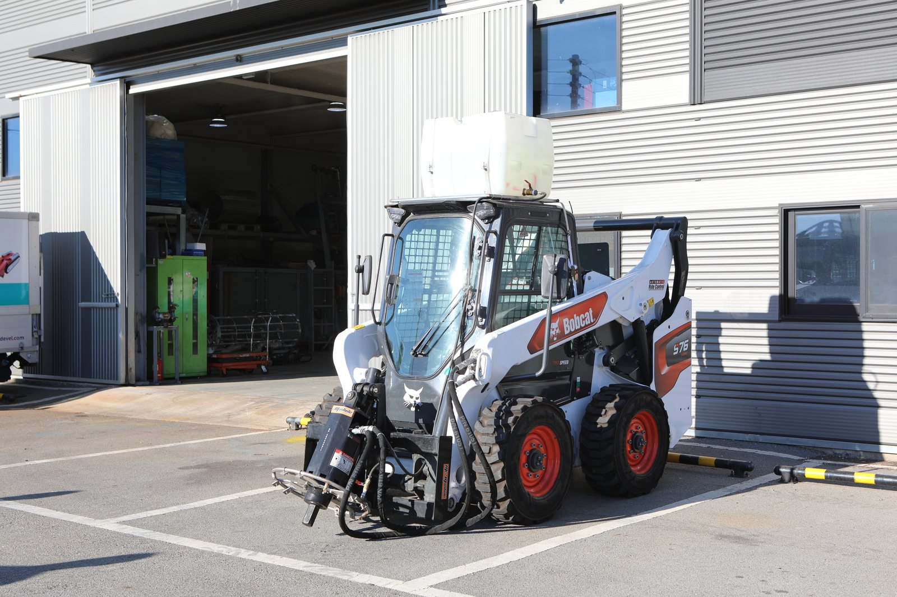
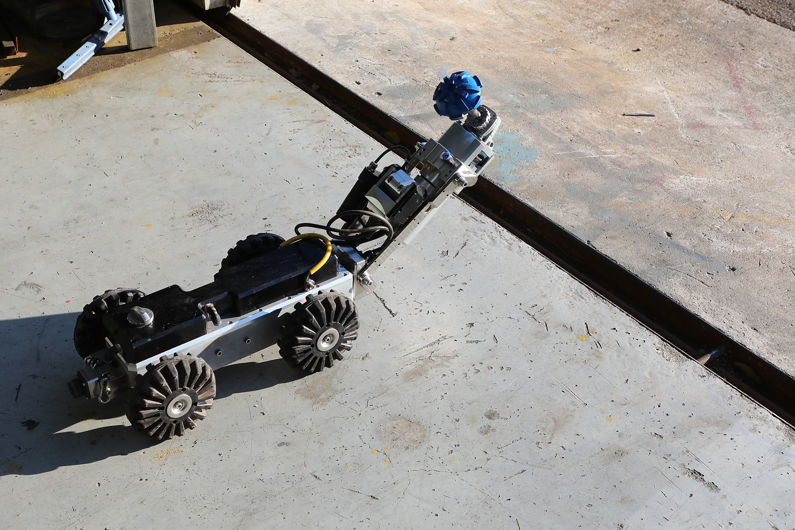

로봇·작업 시스템
현장 조건에 맞춰 적용하는 로봇 클리닝
장비 하나가 아니라,
역할이 나뉜 구성.
작업자가 들어가기 전에 로봇이 위험 물질을 먼저 제거하고, 작업자는 설비 밖 제어 차량에서 CCTV로 내부를 보며 조작합니다. 방폭 지역용 장비(유압 구동 · 방폭 카메라 · Non-spark 재질)로 Reactor·Tank 내부의 질소 분위기 작업까지 수행합니다. 적용 범위는 설비 구조와 잔류물 조건을 확인해 정합니다.
“사람이 없는 곳에 인명 사고도 없다.”무인 로봇 시스템을 개발해 온 신정개발의 원칙 (회사소개서·기술소개서)
설비 내부에서 작업을 수행합니다.
설비 밖에서 작업 상황을 확인하고 조작합니다.
호스로 연결해 회수물을 흡입합니다.
해당 작업에 필요한 경우 회수물을 분리합니다.
자체 개발해 온
무인 로봇 시스템.
2017년 설립한 기업부설연구소를 중심으로 로봇 시스템을 개발해 왔습니다.
2017년 11월 설립. 로봇 시스템의 개발과 시제품 제작을 맡습니다.
정합식 맨홀(2017) · 관내부 무인 준설 처리 시스템(2017) · 스크류 바퀴를 구비한 수륙양용 준설로봇(2020) · 소형관로 준설로봇 및 그 운전방법(2020) · 워터젯 유닛을 구비한 세정로봇 장치(2020)
능동형 촉매 적재장치 · 석유화학 저장탱크 협업형 클리닝 시스템 · 수중 슬러지 수거 무인 자율 이동 로봇 시스템
벽면/천장 부착형 · 흡입/준설 · 파쇄 무인 로봇 시제품을 제작하고, 공인시험기관(KCL) 입회 성능시험을 거쳤습니다.
무인 Vacuum 로봇의 세대별 발전
- 11세대
흡입형 · Pond, Tank(관로) · 수중 작업 가능 · 유압 구동
- 22세대
파쇄 흡입형 · Pond, Open Ditch · 수중 작업 불가 · 전기·유압 구동
- 33세대
파쇄 흡입형 · Pond, Tank · 수중 작업 가능 · 유압 구동
- 44세대
흡입형 · Pond, Tank · 수중 작업 가능 · 유압 구동 · 소형화
- 55세대
파쇄형 · Pond, Reactor · 수중 작업 가능 · 유압 구동 · 소형화
5세대 무인 Cleaning 로봇의 주요 특징
- 방폭 지역 작업 조건 적용 — 방폭 카메라로 원격 감시, 알루미늄 본체, 비철(Non-steel) 스크류, 유압 구동
- 전면부 Jet Nozzle 장착
- 원격 조종
- 스크류형·체인형 바퀴로 유동체 위 작업
- Tank·Reactor 내부의 액체·슬러지 제거
기타 Cleaning 로봇 · 무인 로더(大·小) — 원격 조종, 토사·Sludge(실외·협소 공간), 전기·유압 구동 / 무인 Jet Cleaner — 원격 조종, 설비 고압 세척(8+ Nozzle), 구동부 수중 작업 가능, 전기 구동
연결 구성
로봇과 흡입차는 호스로 연결해 구성합니다. 아래는 야외에서 차량과 궤도형 장비를 호스로 연결해 둔 모습입니다.


적용의 출발점은
현장의 조건입니다.
적용 가능성은 아래 조건을 확인한 뒤 판단합니다. 알고 계신 정보를 보내 주시면 검토에 도움이 됩니다.
- 01출입구·이동 경로
장비가 드나들 출입구의 크기와 내부 이동 경로
- 02내부 코일·장애물
설비 내부의 코일과 구조물 등 장애 요소
- 03잔류물 성상
잔류물의 상태와 특성
- 04온도
설비 내부와 잔류물의 온도 조건
- 05호스 간섭
장비 이동 중 호스가 걸리거나 얽히는 구간
작업의 흐름과
후속 작업
작업 범위에 따라 로봇 작업 이후 필요한 후속·마무리 작업을 진행합니다.
- 01현장 검토
- 02장비 구성
- 03로봇 작업
- 04필요한 후속 작업
- 05회수물 관리
세부 진행은 현장과 업무에 맞춰 조정합니다. 현장 진행 방식 자세히 보기
회수한 물질의
다음 과정까지.
클리닝과 준설 이후에는 회수물의 특성에 맞는 후속 관리가 필요합니다. 원심분리 방식의 데칸타와 압착·여과 방식의 필터프레스 등 고액분리·탈수 과정을 살펴보고, 현장 조건에 맞는 적용과 처리 연계 범위를 상담할 수 있습니다.
- 01회수물 특성
클리닝과 준설로 회수한 물질의 특성을 먼저 확인합니다.
- 02탈수·고액분리 검토
회수물에 맞는 고액분리·탈수 방식을 살펴봅니다.
- 03처리 연계 범위
현장 조건에 맞는 적용과 처리 연계 범위를 상담합니다.
원심분리를 이용한 고액분리
여과·압착을 이용한 탈수
처리량·함수율 등 사양은 대상 물질의 응집 상태에 따라 달라지므로 상담 시 안내합니다.
차량과 장비의
외형.
제어 차량과 흡입차, 궤도형 장비, 흡입 헤드, 로더, 카메라를 갖춘 소형 주행 장비 등 보유 장비의 외형입니다. 장비의 세대·모델·성능 수치는 상담 시 자료로 안내합니다.




보유 장비 구성
진공흡입차(습식 7.5/12㎥ · 건식 12㎥), 고압 살수차, 카고크레인, 지게차
고압 JET-CLEANER 1,000bar, 소형 JET-CLEANER 200~400bar, 온수·스팀 JET-CLEANER, 고압세척유닛
AUTO SEPARATOR(5㎥/3㎥), 원형·다단 선별기, 집진기, 백필터 집진기
무인준설로봇(파쇄형·흡입형), 박스무인준설로봇, 무인로더, 무인궤도로더, 스키드 로더, 미니 포크레인, 소형 굴삭기, 유압 트래시 펌프, 오수 배수 펌프
CCTV 조사차량(D=250~600mm), 관로 CCTV 로봇, 탈취제거 SYSTEM
화학세정용 내산장비(50HP/20HP), 데칸타(슬러지 탈수용), HYDRONIC PUMP
회사소개서(2024) 장비 목록을 용도별로 묶은 것입니다. 보유 수량과 현재 가동 상태는 상담 시 안내합니다.
관련 업무
로봇·작업 시스템과 함께 살펴볼 업무입니다. 업무별 대상과 상담 조건은 상세 화면에서 확인하세요.
사업분야 전체 보기설비 클리닝
탱크·Pond·배수로·R.T.O 내부의 잔류물과 퇴적물을 제거합니다.
자세히 보기촉매·충진물 작업
반응기의 촉매·충진물을 제거하고 교체합니다.
자세히 보기준설·슬러지 회수
하수·오수관과 처리시설의 퇴적물을 준설하고 슬러지를 회수합니다.
자세히 보기출처: (주)신정개발 회사소개서(2024) · 기술소개서(2025)